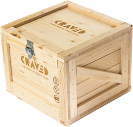
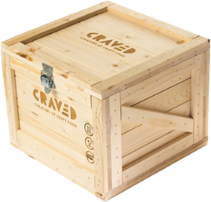

Prática de Design: Prova Individual - 04/12/2020
Nome: Gustavo Luigi Zanibão
Instruções para realização da prova
- Dentro da pasta CSS existem dois arquivos. Monte seu código de resposta no arquivo "respostas.css". Ele ainda não está referenciado, e faz parte da prova sua correta referenciação dentro da pasta css.
- Os arquivos de imagem se encontram na pasta "images". Dentro dessas pastas você encontrará subpastas, cada uma delas contendo as imagens referentes a cada um dos exercicios. Não mova os arquivos de lugar, faça sua referenciação nos locais previamente estabelecidos.
- Os arquivos de audio se encontram na pasta "images". Dentro dessa pasta você encontrará subpastas, cada uma delas contendo os audios referentes a cada um dos exercicios. Não mova os arquivos de lugar, faça sua referenciação nos locais previamente estabelecidos.
- A soma dos exercicios da prova é 14 (quatorze), mas a nota final máxima é 10(dez). Pontos excedentes serão descartados e você não precisa resolver a prova toda para tirar 10.
- De qualquer forma, recomendo fortemente que tente resolver a prova toda. Isso aumentará suas chances de obter uma nota elevada.
Exercício 1 (2,0)
Dada a imagem de referência no arquivo "papaiNoel.jpg" na pasta "images/ex1", faça uma cópia do arquivo, recorte a figura do Papai Noel, exporte-a em transparência e a coloque sobre um fundo de cor azul. A cor de fundo deve ser definida por meio de css.
Exercício 2 (2,0)
Dada a imagem da personagem caminhando disponível na pasta "images/ex2", faça com ela atravesse a tela da esquerda para a direita e volte à posição inicial. Não esqueça de mudar a direção da personagem: ela deve estar olhando na direção para qual ela se desloca. Faça de modo que a animação seja repetida infintamente.

Exercício 3 (2,0)
Carregue a imagem disponível na pasta "images/ex3" e faça com que, ao ser clicada, ela toque o som disponível na pasta "audio/ex3".

Exercício 4 (2,0)
Use posicionamento absoluto e relativo para posicionar as imagens na pasta "ex4" para que corresponda à composição no arquivo "ex5Ref.psd".
 


Exercício 5 (2,0)
Crie uma forma geométrica qualquer em css. Crie uma animação simples de escala ou rotação para esse elemento, mas não atribua por padrão. Em vez disso, use um evento de clique para ativar a animação.